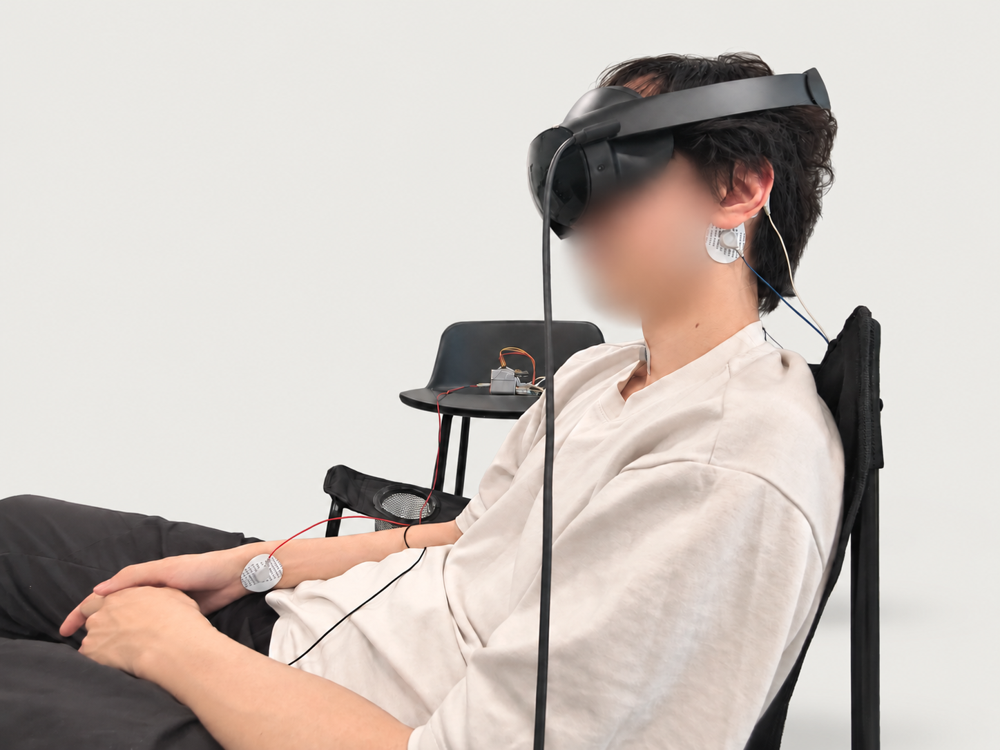
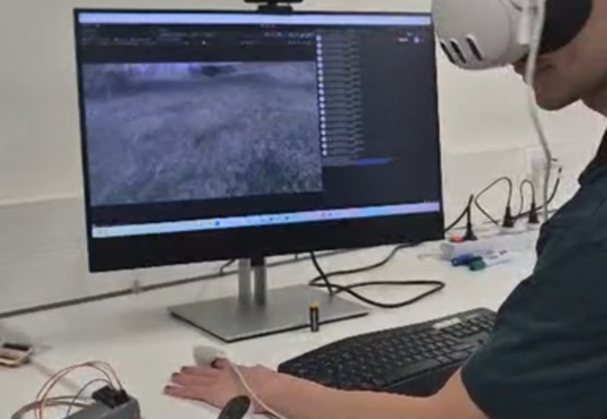
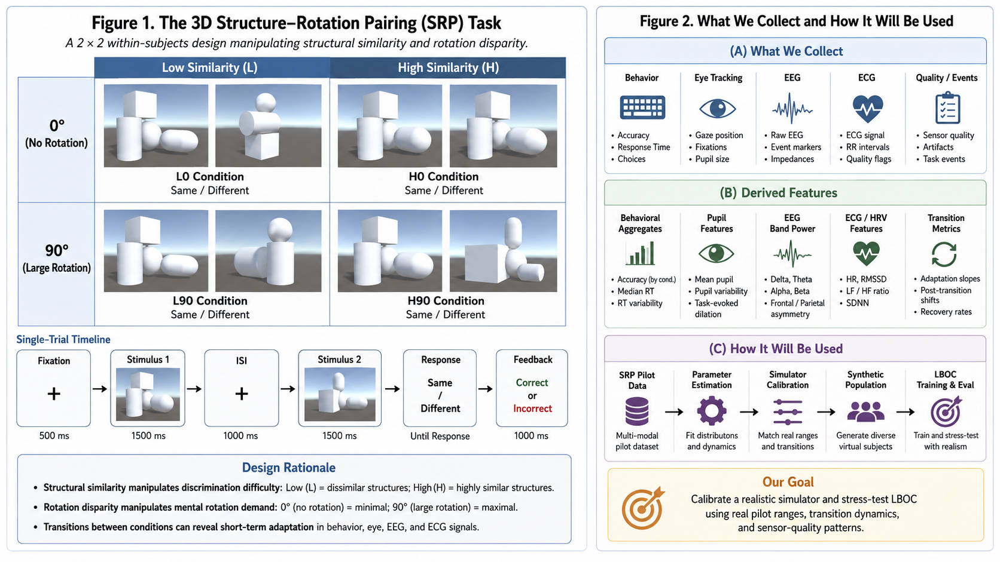

Research
My research centres on adaptive XR and multimodal sensing. Three projects below carry that line of work; other coursework and independent projects are listed after them.
Research

Toward Adaptive VR for Relaxation: Exploring Multimodal Sensing and User-State Prediction
A thesis on controllable visual motion, multimodal recordings, and the limits of calibration-free response estimation in VR relaxation.

Heart-Rate-Adaptive Virtual Reality Exposure Therapy
A prototype exploring how heart-rate changes could inform exposure intensity while keeping pacing, pause, and exit in the participant’s hands.

3D Structure–Rotation Pairing (SRP) Task
A compact XR pilot for measuring behavioral, physiological, transition, and sensor-quality responses under controlled 3D similarity and rotation conditions.
Other projects & coursework
Independent and course projects. Listed for completeness rather than as research contributions.
-
Linki: An Adaptive Agentic RAG System
Adaptive retrieval and agent routing for more reliable question answering.
-
Linki-Agent-I: A Terminal Multi-Agent Coding Assistant
Plans natural-language tasks, delegates research and implementation, executes in a scoped workspace, and verifies the result.
-
Whispers of Dreams: A Human–AI Dream Companion
Emotional conversation, context-aware interpretation, and personalised visual storytelling across three phases.
-
Distilling GPT-4 Preferences for Summarization
Calibrates ROUGE-L, BERTScore, and factuality signals before training with Direct Preference Optimization.
-
Masked Pretraining for Medical Image Segmentation
U-Net framework comparing masked reconstruction and model variants under limited labels.
-
Uicycle: EL-Display Jacket for Safer Cycling
EL-display jacket, bicycle-mounted sensors, and embedded control to make cyclist actions visible at night.
Additional work
Smaller projects and teaching material are listed in my CV. The research list grows as studies reach a presentable stage.
Research output